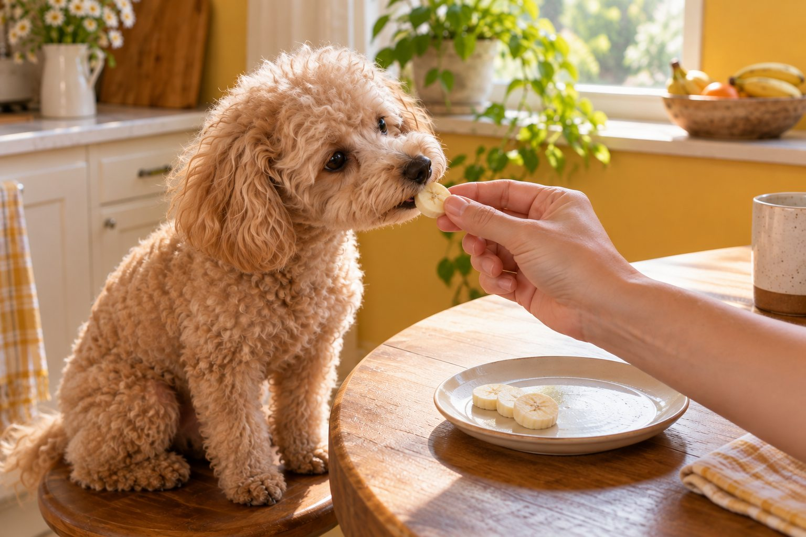

Plain ripe banana is generally fine for many healthy dogs in small amounts; remove the peel and keep treats modest.
Banana is soft, easy to portion, and appealing to many dogs. It is still a treat, not a replacement for balanced dog food. The sugar and fiber can upset some dogs if offered in large amounts, so start small and watch how your dog responds.
Serve banana simply
Peel the banana and offer a few small pieces. A tiny slice makes a useful training reward; for a larger dog, a few more pieces may be reasonable. Avoid giving the peel, which is tough to digest and may cause stomach trouble.
Plain banana is the goal. Banana bread, desserts, and flavored snacks can contain chocolate, xylitol, raisins, or other ingredients unsafe for dogs. Read labels rather than assuming a banana-flavored food is safe.
A small piece of plain, peeled banana is generally an occasional treat for a healthy dog, not a necessary part of the diet. Remove the peel, cut the fruit into pieces your dog can chew, and offer one modest piece the first time. Watch how the dog handles the texture and whether digestion remains normal. A large portion adds sugar and calories without providing a balanced meal. The right amount for a small dog is not the same as for a large one, and a dog on a therapeutic diet needs individual veterinary guidance.
Do not let the dog swallow the peel. It is hard to digest and can pose a blockage risk if a substantial piece is eaten. If your dog seems painful, vomits repeatedly, or cannot pass stool after eating a peel, seek veterinary advice. The safest serving method is simple fruit, not a complicated recipe.
Think about the whole diet
Treats should make up only a small share of daily calories. Dogs differ in size and health needs, and a veterinarian can help with portions if your dog has diabetes, weight concerns, or a special diet.
Introduce any new food gradually. If your dog vomits, develops diarrhea, or seems uncomfortable, stop offering it and seek veterinary advice if signs persist or are severe.
Treats count even when they are fruit. Ask how much of the daily food allowance is already used by training rewards, chews, table scraps, and food hidden in toys. Several family members each offering a little can turn a small extra into a large one. A complete dog food should remain the main source of nutrition. If weight is increasing, reducing treats may be more useful than looking for a supposedly healthier dessert. Discuss body condition and calorie needs with your veterinarian rather than relying on a universal fruit portion.
Banana is not a remedy for diarrhea or constipation. A dog's digestive response can vary, and adding food during illness may complicate the picture. If a dog has diabetes or another condition requiring a managed diet, ask the clinician before making banana a regular reward. There is no reason to persuade a dog that dislikes it to eat it.

Try practical serving ideas
You can mash a little banana into a food puzzle or freeze a small slice for a warm day, provided your dog can chew it safely. Supervise frozen treats to reduce choking risk, especially with eager eaters.
Fresh water and a complete, age-appropriate diet remain more important than any single treat. Variety is optional; your dog does not need banana for good nutrition.
The easiest serving ideas are small and plain: one slice by hand, a tiny piece tucked into a food toy, or a little mashed fruit used to help the dog engage with a puzzle. Freeze a small piece only if your dog can handle the firm texture safely, and supervise chewing. Avoid a whole frozen banana, which is a large serving and may be difficult to manage. Always clean toys and bowls after sticky food is used so residue does not spoil or attract insects.
Human banana desserts are different from banana. Bread, muffins, smoothies, and flavored yogurts may include chocolate, raisins, high fat, or sweeteners. The FDA warns that xylitol, sometimes called birch sugar, is dangerous for dogs and may appear in sugar-free products. Check every ingredient before sharing a prepared food, and when uncertain, skip it. Plain fruit is easier to judge.
Know when to skip it
If your veterinarian has recommended a restricted diet, follow that plan. Avoid sharing food from a plate that may contain butter, syrup, chocolate, or sweeteners. When in doubt about an ingredient, call your veterinarian before offering it.
If the dog tries banana and then vomits, has loose stool, or seems uncomfortable, stop offering it. Contact a veterinarian if symptoms are severe, persistent, or accompanied by weakness. Do not use another food to counteract a reaction. Save the product packaging if the banana was part of a prepared snack; ingredient details may matter. For suspected xylitol exposure, seek urgent veterinary guidance immediately rather than waiting for signs to develop.
Some dogs swallow treats quickly. Choose pieces small enough to chew comfortably but not so large that the dog must gulp them. Supervise the first few offerings, particularly with an eager puppy or a dog that tends to snatch food. A treat is successful when it is enjoyable and leaves the normal diet undisturbed. If banana creates digestive upset, choose a different reward.
Practical details
A banana is a treat, not a nutrition strategy
A small slice of ripe banana is easy to share, but it does not improve a complete dog diet by itself. Dogs already receive their core nutrients from appropriately formulated food. Banana adds sugar and fiber, so a large serving may cause loose stool or unnecessary calories. Start with a piece small enough that you can see how your dog responds before offering it again.
Size matters. A portion that looks tiny to a person can be substantial for a small dog. Instead of dividing an entire banana with your pet, cut a few thin slices and save the rest for yourself. If your dog is managing weight, diabetes, or a digestive condition, ask your veterinarian how treats fit into the overall feeding plan.
Banana choices at a glance
| Situation | Practical response |
|---|---|
| Plain ripe banana flesh | A few small pieces may be a treat for many healthy dogs; introduce it gradually. |
| Banana peel | Skip it because the tough peel is hard to digest and may cause problems. |
| Banana bread or dessert | Check ingredients; chocolate, xylitol, raisins, and other additions can be dangerous. |
| Dog on a prescribed diet | Ask the veterinarian before adding any new treat, even a simple fruit. |
Kitchen safety is about the whole recipe
A plain banana differs from banana bread, smoothies, and baked treats. Chocolate, raisins, xylitol, and some other common additions are unsafe for dogs. Xylitol can appear in sugar-free products, so check packaging rather than guessing from a product name. Butter, sweeteners, and rich toppings may also upset the stomach even when a recipe lacks a known toxin.
Remove the peel and cut the fruit into manageable pieces. A large frozen chunk could be a choking risk for a dog that gulps food, so supervise frozen treats and keep pieces small. Wash hands and food surfaces as you would for any kitchen preparation. Treats should be a deliberate choice, not something tossed from the table without checking ingredients.
A family can make a simple treat rule: one person prepares a few small pieces and everyone uses that same day's allotment for training or enrichment. This prevents overlapping portions. If the dog receives a larger training session, use part of the normal food allowance as rewards. Record any new food for a few days so that a reaction is easier to connect with a change. Introducing several fruits or snacks at once makes it harder to know which one caused trouble.
In a household with dogs of different sizes, divide treats individually rather than handing out equal chunks. A piece that is trivial for a large adult may represent a meaningful extra for a tiny dog. Keep fruit away from unsupervised pets, and discard peels where a dog cannot raid the bin. Practical portion control is more important than the fact that the food is natural.
What to watch after the first taste
Most dogs tolerate a small new treat, but individual responses vary. Stop offering banana if your dog develops vomiting, diarrhea, or discomfort. If symptoms are severe or continue, contact a veterinarian. Do not assume that a reaction proves an allergy; many explanations are possible, and a veterinarian can advise whether assessment is needed.
For training, tiny banana pieces may work when they are practical to handle, but they can become sticky. A measured portion in a food puzzle is another option. Keep a rough count of all daily treats, including chews and reward foods. The most useful answer to 'Can dogs eat bananas?' is yes for many dogs in a small plain portion, with the whole diet and the individual dog's health kept in view.
Think of banana as one possible reward among many. The advantage is convenience and a soft texture; the limitation is that it does not replace balanced food and may not suit every stomach. You can still build enjoyable training sessions with part of the dog's regular kibble, a suitable commercial treat, or play. The choice should fit the dog's health, size, and preferences. Avoid declaring a food universally safe in unlimited amounts just because it is familiar to people.
Review treats whenever the dog's weight, appetite, or medical plan changes. Ask the veterinary team to help you decide whether banana fits. If a dog is on a prescription diet, even small extras can interfere with the intended plan, so get specific guidance. The best answer to whether a dog can eat banana is a conditional yes for a small plain treat in an otherwise appropriate diet.
Keep banana in perspective when choosing rewards. A dog can learn a cue with a small piece of regular food, a brief game, or praise it values; fruit is only one option. If you use banana for a puzzle toy, count the portion and clean the toy afterward. Do not add sweet spreads, especially sugar-free products whose ingredients may include xylitol. The FDA advises immediate veterinary contact for suspected xylitol exposure because serious effects can develop quickly. Keep packaging so the team can identify the product.
For a dog that has never tried banana, start with a small piece when the dog is otherwise well. Watch for digestive upset and avoid introducing several new treats on the same day. If the dog dislikes it, move on. If it enjoys it, preserve the normal complete diet and use fruit occasionally. Discuss treats with the veterinarian for a dog with diabetes, weight concerns, or a prescribed diet. A small treat should make life pleasant without making nutritional care harder.
Offer fruit as a small extra
Peel the banana and cut a modest piece that your dog can chew comfortably. Offer it alone the first time so you can notice any digestive change. Banana should be a treat alongside a complete, balanced diet rather than a substitute for a meal. Avoid sweetened banana desserts, which can contain ingredients unsuitable for dogs, and do not let your dog chew the peel.
Dogs vary in size, health, and calorie needs. A few small pieces are a more sensible trial than a whole banana, especially for a small dog. If your dog has a condition that requires a special diet, ask your veterinarian before adding regular fruit treats. Treats add up quickly when several family members feed them, so agree on one daily approach and include training rewards in that total.
If your dog vomits, has diarrhea, or seems uncomfortable after a new food, stop offering it and seek advice if symptoms persist or are severe. There is no nutritional need to persuade a dog to enjoy banana. Water and the usual balanced food remain the foundation.
Continue exploring
For a broader routine, read Can Cats Eat Cooked Chicken?, Wet vs Dry Cat Food: What's the Difference?, and How to Read a Pet Food Label Without the Hype.
Frequently Asked Questions
Can puppies eat banana?
A very small piece may be suitable after your veterinarian confirms a puppy's feeding plan; avoid replacing balanced puppy food.
Can dogs eat banana peels?
Do not offer the peel. It is difficult to digest and may cause problems.
How much banana is too much?
The right amount depends on size and diet. Keep it occasional and small, and ask your veterinarian for individualized advice.
Editorial references
These resources informed the general guidance in this article. They do not replace advice tailored to your pet.
This guide offers general information. Your pet’s age, health, and history may call for a different plan. For medical concerns, ask your veterinarian.